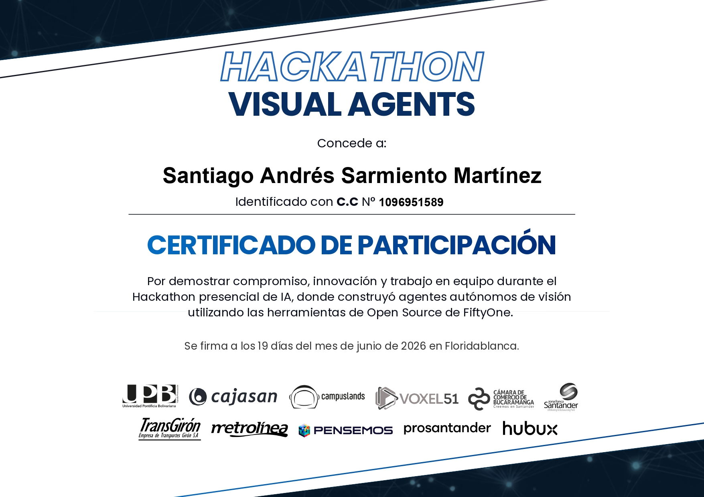

Bienvenido a SarmientoOS
Entorno de desarrollo e identidad profesional de Santiago Sarmiento
Identidad Profesional
Santiago Sarmiento
Software Developer & AI Tech
Disponible para proyectos
Desarrollador de software con experiencia en automatización de flujos con inteligencia artificial, diseño frontend interactivo y control de versiones. Formado para crear soluciones eficientes y bien estructuradas.
Logro Destacado

Hackaton de Machine Learning
Proyecto Visual Agents. Monitoreo e inteligencia artificial aplicada para la prevención de accidentes en entornos viales e integración de alertas automatizadas.
Acceso al Sistema
>_
Lanzador de Consola Interactiva (CLI)
¿Prefieres interactuar mediante comandos? Accede directamente a la terminal de SarmientoOS para ejecutar herramientas de diagnóstico y navegar los recursos en modo comandos.